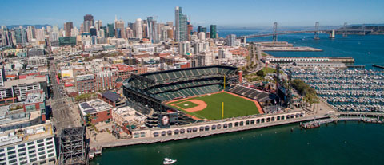

I am a Computer Science major at CSUMB. In my free time I enjoy watching sports, playing video games, learning about new technology, and relaxing. Some things I dislike are: essays, very hot weather, and traffic.

Emojicons
( ˚ ▽ ˚ )
This emoticon is an excited face.
( ̑ _ ̑ )
This emoticon is a face that looks happy but without a smile.